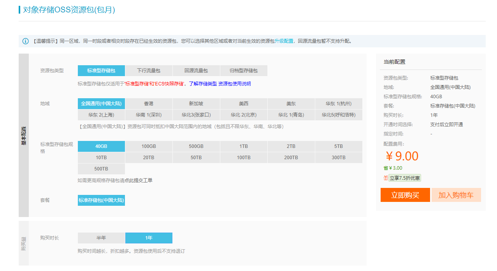
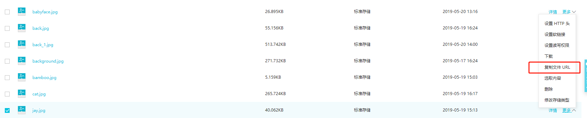
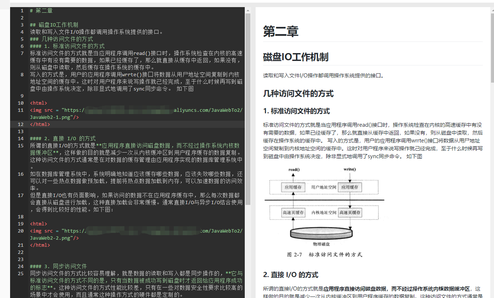
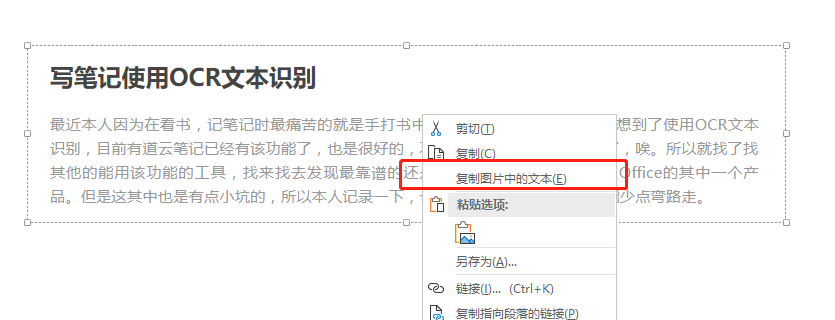
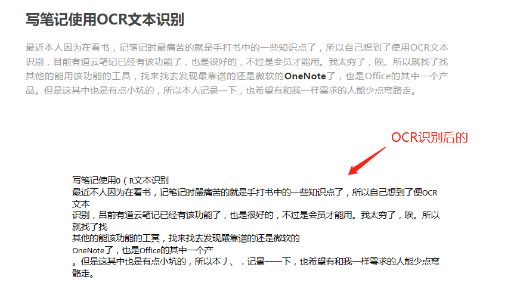

我们知道在有道云笔记中，MarkDown要添加图片需要会员功能才可以复制粘贴，本文主要介绍了非会员使用MarkDown添加图片的方法，以及使用文本识别OCR的功能。
MarkDown添加图片
首先要想添加图片，是需要一个前提的，那就是要有图片的外链URL, 也就是要使用OSS云服务器，阿里云，七牛云，腾讯云OSS等等。我这里使用的是阿里云OSS服务器，七牛云虽然有免费的，但是没买域名的话图片URL只有1个月的使用时间，每个测试域名自创建起 30 个自然日后系统会自动回收，仅供测试使用并且不支持 Https 访问。最重要的是我总是看到网上的博客偶尔就不显示图片了，我估计都是用免费七牛云造成的- -。所以我这边没有用它，使用的是阿里云的OSS服务。
阿里云OSS介绍链接，这个是阿里OSS的链接，我还是比较推荐的，不过我最心动的还是因为价格！
| 有道云会员 | 阿里OSS服务 |
|---|---|
| 15元一个月 | 半年4.98元 一年9元 |

在有OSS服务器之后就好办了，上传文件之后复制URL外链。如图

之后只要在有道云笔记MarkDown中使用如下代码写法即可。
1 | <html> <!-- src中自然就是你刚刚复制的url外链 --> |
因为MarkDown是支持html语法的。如下图例：

可以看到左边的代码右边已经显示图片了。搞定~
写笔记使用OCR文本识别
最近本人因为在看书，记笔记时最痛苦的就是手打书中的一些知识点了，所以自己想到了使用OCR文本识别，目前有道云笔记已经有该功能了，也是很好的，不过是会员才能用。我太穷了，唉。所以就找了找其他的能用该功能的工具，找来找去发现最靠谱的还是微软的OneNote了，也是Office的其中一个产品。但是这其中也是有点小坑的，所以本人记录一下，也希望有和我一样需求的人能少点弯路走。
不能使用Win10自带的Office中自带的OneNote
我清楚是不是都是我这样，但是我的win10自带的OneNote是没有OCR功能的，都是卸载之后重新去官网下载的安装包进行的安装。正常有功能的话右键会有下图情况。

在点击完这个按钮之后就可以进行粘贴了，粘贴后如下图：

然后就可以复制到有道云或者其他的地方了。不过这个识别不是很准确，印刷体的话还是蛮准的。本文到此就结束了，希望能对你们有所帮助。